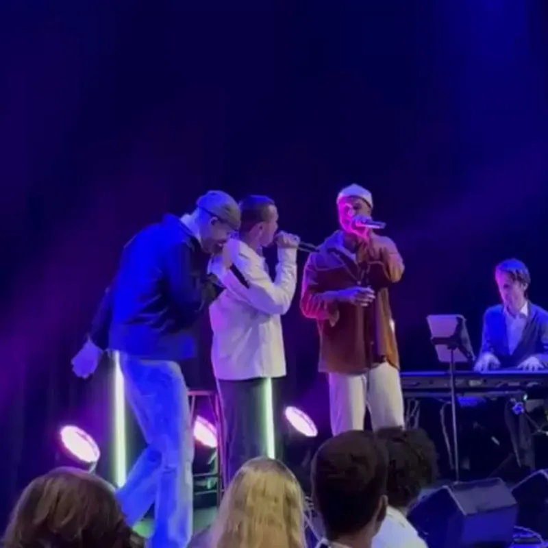

Gryting, far og to sønner
Disse tre vokalistene kommer gjerne til ditt event, enten for din bedrift eller i mer private fester som ønsker noe ekstra og som løfter stemningen.
Endre tok seg helt fram til semifinalen i The Voice på TV 2 der mentor-Yosef slo fast at han allerede var en av de beste rapperne her til lands.
Adam ble en publikumsfavoritt da han kom til finalen i Norske Talenter i 2019. Dommerne mente Norge hadde fått en ny stjerne og sammenlignet ham med både Michael Jackson og Bruno Mars. Han opptrer nå på større festivaler og kulturhus over hele landet.
Pappa Håvard er en erfaren vokalist og korist som deltatt i Melodi Grand Prix og Eurovision Song Contest en rekke ganger. Håvard har reist mye med blant annet Åge Sten Nilsen, Ravi, Sissel Kyrkjebø og KORK.
Han er fast medlem av sanggruppa Mamas Garden, og i tillegg er han for tiden vokal-coach for The Voice på TV 2.
Han gjør også egen Ray Charles tribute-konsert, med fullt band eller kun kapellmester Trond Akerø Kleven - og saksofonist Frøydis Grorud kjent fra NRKs Beat for Beat.
I tillegg kan han gjøre en mer intim konsert kalt "I Sinatras fotspor", der all oppmerksomheten er rettet mot sentimental, silkemyk og dramatisk swingjazzvokal.